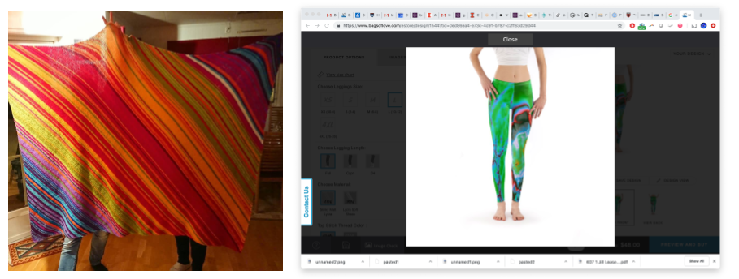

<!doctype html>
<html>
  <head>
<meta charset="utf-8">
<meta name="viewport" content="width=device-width, initial-scale=1.0, maximum-scale=1.0, user-scalable=no">

<title>Optional - Ways to share your viz</title>

<link rel="stylesheet" href="https://cdnjs.cloudflare.com/ajax/libs/reveal.js/3.6.0/css/reveal.css">
<link rel="stylesheet" href="https://cdnjs.cloudflare.com/ajax/libs/reveal.js/3.6.0/css/theme/white.min.css">
<link rel="stylesheet" href="https://maxcdn.bootstrapcdn.com/font-awesome/4.5.0/css/font-awesome.min.css">

<!-- Theme used for syntax highlighting of code -->
<link rel="stylesheet" href="https://cdnjs.cloudflare.com/ajax/libs/highlight.js/9.12.0/styles/github.min.css">
<link href="https://fonts.googleapis.com/css?family=Questrial" rel="stylesheet">

<!-- Printing and PDF exports -->
<script>
    var link = document.createElement( 'link' );
    link.rel = 'stylesheet';
    link.type = 'text/css';
    link.href = window.location.search.match( /print-pdf/gi ) ?  '/revealjs/css/print/pdf.css' : '/revealjs/css/print/paper.css';
    document.getElementsByTagName( 'head' )[0].appendChild( link );
</script>
<script src="https://cdnjs.cloudflare.com/ajax/libs/reveal.js/3.6.0/lib/js/head.min.js"></script>
<script src="https://cdnjs.cloudflare.com/ajax/libs/reveal.js/3.6.0/js/reveal.min.js"></script>

<script src="https://cdnjs.cloudflare.com/ajax/libs/vega-lite/2.3.1/vega-lite.min.js"></script>


<style type="text/css">
.reveal section.present {
  text-align: left;
}
.centered {
  text-align: center;
}
.reveal {
  font-size: 30px;
  font-family: 'Questrial', sans-serif;
}
.reveal section img {
  box-shadow: none;
  border: 0px;
  display: block;
  margin-left: auto;
  margin-right: auto;
}
.reveal bigtext {
  font-size: 800%;
}

.reveal h1, .reveal h2, .reveal h3 {
  text-transform: none;
}

.reveal .titleslide h1 {
  text-align: center;
}
.reveal .titleslide h2 {
  text-align: right;
}

.vertical_center section {
  vertical-align: middle;
}

.left_abs {
  left:0%;
  text-align: left;
  float: left;
  width:50%;
  z-index:-10;
}

.left {
  left:-8.33%;
  text-align: left;
  float: left;
  width:50%;
  z-index:-10;
}

.right {
  left:31.25%;
  top: 75px;
  float: right;
  text-align: right;
  z-index:-10;
  width:50%;
}

.reveal table td {
  text-align: left;
  padding: 0.2em 0.5em 0.2em 0.5em;
  border: solid; 
}

.reveal table tbody tr:last-child th,
.reveal table tbody tr:last-child td {
  border-bottom: solid; }

.reveal .table-hl {
  background: #aaa;
}


</style>
  </head>

  <body>
    <div class="reveal">
      <div class="slides">
        <section data-markdown
           data-separator="^\n---\n"
           data-separator-vertical="^\n----\n"
           data-separator-notes="notes?:"
           >
          <script type="text/template">
<br>
<br>
<br>

# Other Publishing Ideas

---

## Publishing

Your stunning visualizations will do no one any good if they reside only on your laptop. How do you get them out there?

 * The Internet
 * In-Person Presentation
 * Popular Media
 * Physical Objects

---

## Publishing for the Web

 * Raw HTML, CSS, SVG, and JavaScript
 * Content Management Systems
 * Idyll
 * GitHub Pages
 * Social Media
 
notes: we'll be mostly playing with idyll and github pages, but we'll also make a bit of content that you can share on social media (your webpages certainly can be shared)

---

## Raw HTML, CSS, SVG, and JavaScript

Pros:
 * Less of a learning curve for individual parts (though, more to put them into a final webpage)
 * Lots of documentation

Cons:
 * No reproducibility
 * LOTS of code writing
 * Locked in time - no software updates

---

## Content Management Systems

There are dozens of these, for instance: 
 * Squarespace
 * Wordpress
 * Wix
 * Drupal


notes:
Squarespace seems to be the favorite of small businesses. Drupal is great for large businesses.

---

## Content Management Systems

Pros:
 * Pre-built templates that might be updated by the development community
 * Plugins with visualization tools
 * Content updates are done by GUI

Cons: 
 * Visualization tools not automatically built in
 * More effort because they're meant for whole websites
 * Code (especially for plugins) can become outdated and incompatible

---

## Idyll

Pros:
 * Visualization-ready, compatible with Vega-Lite, D3.js, and Flourish
 * Modern features and design

Cons:
 * Less common syntax (Markdown)
 * Not well-documented
 * open source means less guarantee of long-term support in the future


---

## GitHub Pages

Pros: 
 * Community driven (there's lots of support)
 * Free hosting

Cons:
 * Community driven (there can be bugs and surprises)
 * You only get the one webpage


---

## Social Media

How can visualization be distributed on social media?
 * Images can be shared everywhere
 * Embedded videos using YouTube, Vimeo, FB video, etc
 * [SketchFab](https://sketchfab.com) scenes can be shared on Reddit, Facebook, and Twitter
 * Your webpages can be linked of course!

notes:
The internet is visual, and increasingly about video (or at least animated gif)

Sketchfab is a great service for viewing 3D content in a web browser.

---

## Social Media

Pros:
 * Huge audience
 * Easy to target the communities you're trying to communicate with

Cons:
 * Limited functionality, especially with respect to interactivity
 * Visualizations have shorter expiration date
 * No quality control

---

## Sharing Visualizations in Live Presentation

 * Jupyter Notebook (cleaned up)
 * PDF (3D capability!)
 * Powerpoint (3D capability!)
 * Mobile App
 * Printed on paper (300dpi, serif fonts, line thickness)
 * Custom in-house software (e.g. Bloomberg Terminal)


notes:
Some of these are a bit outdated, but sometimes corporate environments require you to speak the language management wants you to speak.

---

## Sharing Visualizations through Popular Media

 * Videos and films


notes:
This approach usually relies on more stylized treatments called "motion graphics".

Often the film approach depends on working with someone who produces movies who is looking for content. But some people will produce their own content (especially in short documentary format) for internet release.

---

## Sharing Visualizations through Popular Media

 * Museum exhibits


notes:
You get much more control when working with experts in museums, and you get to see your visualization blown up to huge sizes.

You still need to make a visualization that even a very small child will understand though.

---

## Sharing Visualizations through Popular Media

 * App Stores


Image from <a href="http://worldwidetelescope.org/webclient/">World Wide Telescope</a>

notes:
This is how you can reach people through their phones and popular new media like virtual reality.

---

## Making Visualization

 * 3D printing (check out [Thingiverse](https://www.thingiverse.com/) or a [NASA 3D print](https://nasa3d.arc.nasa.gov/detail/cassiopeiaA))
 * Printed leggings (check out [Bags of Love](https://www.bagsoflove.com/))
 * Blankets
 * Whatever you can think of 
    * Visit [Instructables.com](https://instructables.com) for ideas!



notes: here the blanket is the daily temperature recorded every day for a year 

the leggings are a scientific viz - the leg on the left is density and the right is temperature, taken from a simulation of stars forming in a gaseous region

with 3D printing, you can make "surfaces" in your dataset (more on that when we chat about scientific viz) and then 3D print these things


          </script>
        </section>
      </div>
    </div>
<script>
    // More info about config & dependencies:
    // - https://github.com/hakimel/reveal.js#configuration
    // - https://github.com/hakimel/reveal.js#dependencies
    Reveal.initialize({
        dependencies: [
            { src: 'https://cdnjs.cloudflare.com/ajax/libs/reveal.js/3.6.0/plugin/markdown/marked.js' },
            { src: 'https://cdnjs.cloudflare.com/ajax/libs/reveal.js/3.6.0/plugin/markdown/markdown.min.js' },
            { src: 'https://cdnjs.cloudflare.com/ajax/libs/reveal.js/3.6.0/plugin/notes/notes.min.js', async: true },
            { src: 'https://cdnjs.cloudflare.com/ajax/libs/reveal.js/3.6.0/plugin/highlight/highlight.min.js', async: true, callback: function() { hljs.initHighlightingOnLoad(); } },
            { src: '/reveal.js-plugins/chalkboard/chalkboard.js' },
            { src: 'https://cdnjs.cloudflare.com/ajax/libs/reveal.js/3.6.0/plugin/math/math.min.js', async: true }
        ],
		keyboard: {
			67: function() { RevealChalkboard.toggleNotesCanvas() },	// toggle notes canvas when 'c' is pressed
			66: function() { RevealChalkboard.toggleChalkboard() },	// toggle chalkboard when 'b' is pressed
			46: function() { RevealChalkboard.clear() },	// clear chalkboard when 'DEL' is pressed
			 8: function() { RevealChalkboard.reset() },	// reset chalkboard data on current slide when 'BACKSPACE' is pressed
			68: function() { RevealChalkboard.download() },	// downlad recorded chalkboard drawing when 'd' is pressed
		},
        center: false,
        transition: 'none',
        backgroundTransition: 'none',
        showNotes: true,
        progress: false,
	slideNumber: true,

    });
</script>
  </body>
</html>

